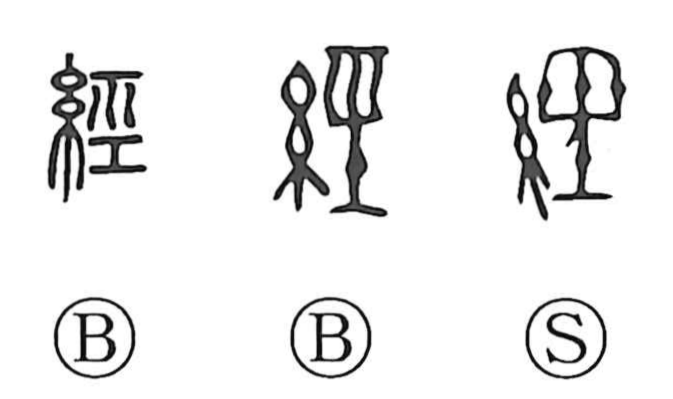

Explanation
経, formerly 經, combines 糸, thread, with the sound element 巠. 巠 pictures the warp stretched on a loom, with a crosspiece below keeping the threads in place. It is itself the earlier graph for the warp.
The warp provides the fixed structure through which the transverse weft, 緯, is worked. Together, 経緯 names the two systems of thread and then the connected course or order of a matter. Following that course gives passing through events, the passage of time, and experience.
Because the warp establishes the basis for the whole fabric, 経 also means a governing principle, a constant rule, or the work of organizing and managing affairs. A foundational text is an 経, giving the classical books and, in Buddhism, scriptures recited or studied as authoritative teaching.